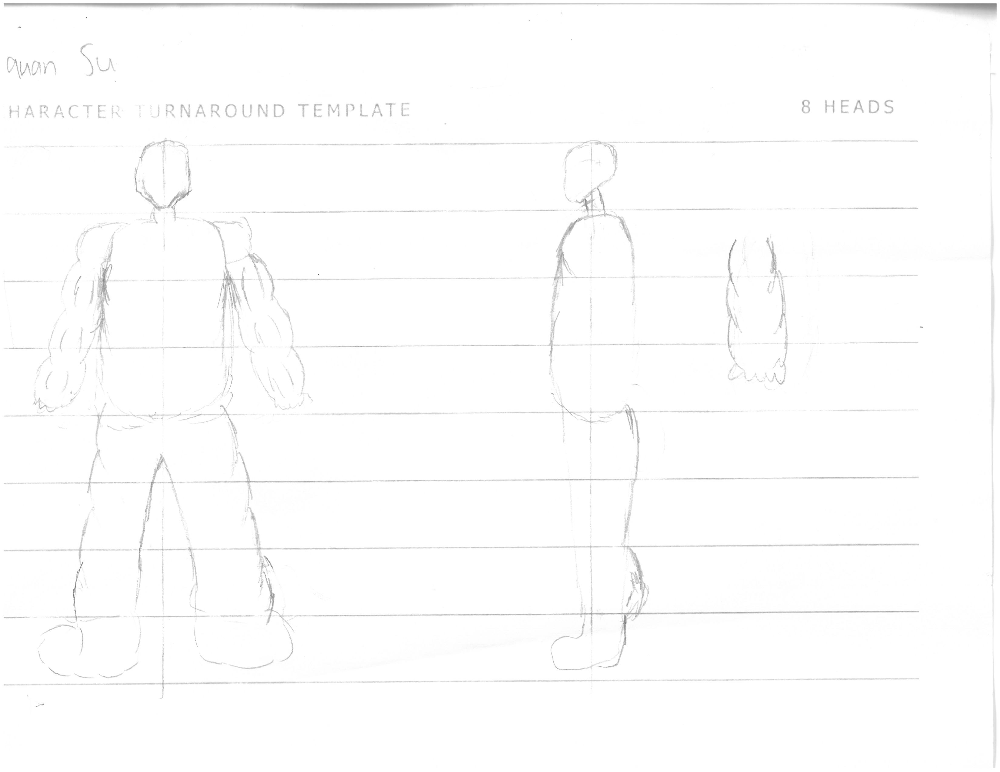

I have decided to make my turnaround character fit in 9 lines in able for him
to have a description of a "buff character"
I feel like my character's carves look a bit weird.
"I think you should make the carves more proportionate"
"Shape the head better"
"You did good at making the character big and tall"
"Creating this kind of character is a good idea"
I made the carves more proportionate due to the fact that it was too low
and that isn't where carves are meant to be
I also shaped up the head better instead of making it seem blocky, I made it more realistic
I also redrew the arm to give it a better anghle since it would be easier to model.

I started off with a cube and mirrored it to begin my torso
I then added loop cuts to create more vertices and started shaping up the torso
The torso looks a little bit funny. I want to stick the chest out
a little bit since it is quite flat.


What things do I need to imrpove on?
"Top of torse looks too disproportionate and the side looks weird "
"Looks a bit funny and quite flat at the front"
What have I done well?
"You did well at shaping the back since it looks even and right"
"You did really well at shaping the start of the shoulders
I have made my characters chest stick out more and made it curve
back in to the stomach
I have also made the top of the back more flatter
so it doesn't look like a diamoand
I also made it look less weirder and just made it more natural
which is why I made the chest sticdsk out a bit so it looks natural.
I also makes my character fit the title better as "buff"


I made the different cubes to create the upper part of
the arma and the lower part of the arm
I then looped cut to create more vertices so it will be easier to shape the arm
I had a lot of trouble doing the arm and it looks really funny and weird.

What things do I need to improve on?
"The arm looks disproportionate and the upper arm should be a litle bit
bigger than the lower arm"
"The arm looks a bit funny and should be reshaped"
Would this suit for kids from 8-12 years old?
"No I don't think so due to the fact that it doesn't look proportionate"
"No it looks like the triceps just float there"
\I struggle a lot doing this so it doesn't look any different but
I tried shaping the arm better but mainly worked on it from the back.